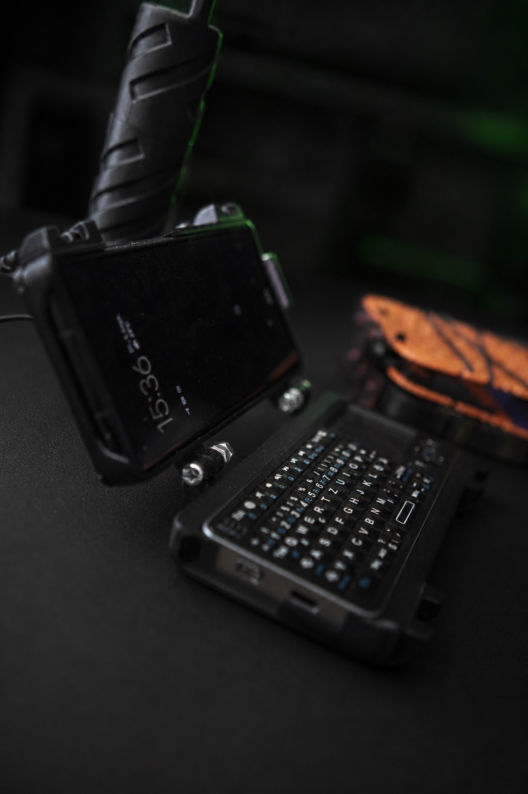
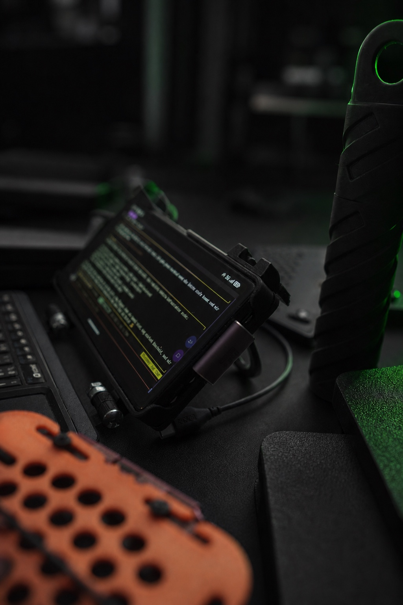
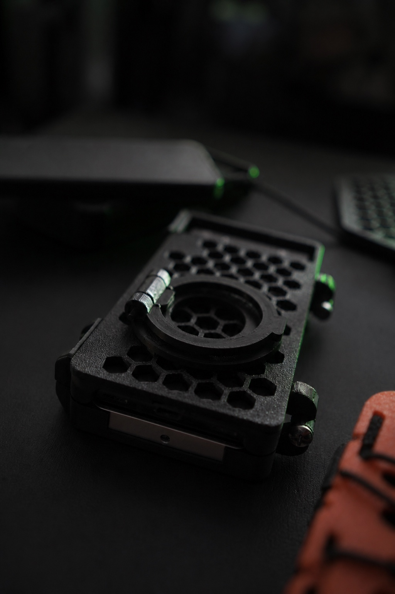
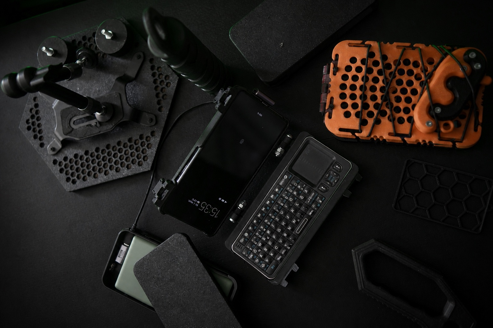
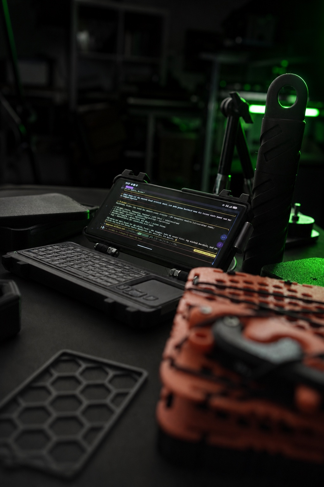

Vom Pixel 6a zum mobilen System
Pixel 6a, Rii K06, Stromversorgung und die Frage, was ein eigenständiges Cyberdeck für dauerhafte Agentenarbeit wirklich braucht.
Ich dokumentiere den Aufbau selbst: Fortschritt, Fehler, Entscheidungen und offene Fragen — chronologisch, aus meiner Sicht. Das ist kein Tech-Manual, sondern mein Entwicklungsjournal.
Pixel 6a, Rii K06, Stromversorgung und die Frage, was ein eigenständiges Cyberdeck für dauerhafte Agentenarbeit wirklich braucht.

9 finale STL-Dateien: V14-Gehäusehälften, V6-Akku-Unterbox, V2-Ringstand und das optionale +1-mm-Clip-Upgrade.

Ich habe HUNTER so gebaut, dass er nicht vergisst: Holographic Memory, fünf Sicherheitsschichten und eine Selbstverbesserung, die aus den Fehlern des Systems lernt. Aber auch diese Architektur hat Grenzen — und die sind menschlich.

Termux, PRoot-Ubuntu, tmux-Gateway, Watchdog und acht Cron-Jobs: Der Stack startet selbstständig und bleibt beobachtbar.

Clips immer zuerst einzeln testen: 9,26 mm, 9,34 mm oder 9,42 mm. Drucker und Material entscheiden über die Passform.

Der offene Build umfasst Agent-Setup, Gateway, Watchdog, Cron-Jobs, Architektur, Optimierungs-Checkliste und Releases.

Der erste Tod meines Agenten: Android, SIGKILL, 18:44 Uhr, kein Abschied. Fünf Tode an einem Tag — und der Fix, der HUNTER resilient machte, statt unsterblich. Mit echten Messwerten: 83+ Stunden Uptime, 0 OOM-Kills seit dem Fix.